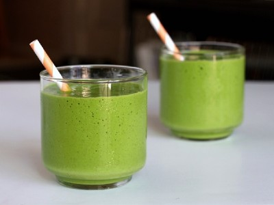

|  |
Smoothie name: Green bean smoothie - pennywort▸ Ingredients:
▸ Time to prepare: 30 minutes ▸ Approx quantity: 1 medium-size cup |
▸ How to make Green Bean Smoothie - Pennywort :
- Tonic coconut water, grated copra, set aside.
- Pennywort picked, washed, soaked in dilute salt water and then chopped into a blender with 200ml of water.
- Puree, filter the water, remove the residue.
- Green beans are washed, soaked for about 2 hours, taken out and put in a small blender.
- Then, add coconut water, pennywort juice, and bean water, mix well to drink.
- Can add ice, milk or sugar to increase sweetness, fat.
▸ Calories and related information: